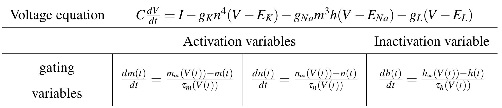

2.2: Modeling Neurons
Deep Dive into Neuron Models with Neun
Introduction
In this section, we’ll explore single neuron models in depth, understanding their properties, behaviors, and how to use them effectively with Neun. While single neurons may seem simple, they exhibit rich dynamics that are essential for understanding network behavior.
Exploring Neuron Models
The classic biophysical neuron model with sodium and potassium conductances:

src/hh.py
import neun_py
import numpy as np
import matplotlib.pyplot as plt
# Compare different external currents
currents = [0.05, 0.1, 0.15]
colors = ['blue', 'green', 'red']
# Create subplots for each current
fig, axes = plt.subplots(len(currents), 1, figsize=(10, 8), sharex=True)
dt = 0.001 # Time step (ms)
T = 100 # Simulation duration (ms)
time = np.arange(0, T, dt)
for idx, (I_ext, color) in enumerate(zip(currents, colors)):
# Create neuron
args = neun_py.HHDoubleConstructorArgs()
neuron = neun_py.HHDoubleRK4(args)
# Set parameters
neuron.set_param(neun_py.HHDoubleParameter.cm, 1.0 * 7.854e-3)
neuron.set_param(neun_py.HHDoubleParameter.vna, 50.0)
neuron.set_param(neun_py.HHDoubleParameter.vk, -77.0)
neuron.set_param(neun_py.HHDoubleParameter.vl, -54.387)
neuron.set_param(neun_py.HHDoubleParameter.gna, 120 * 7.854e-3)
neuron.set_param(neun_py.HHDoubleParameter.gk, 36 * 7.854e-3)
neuron.set_param(neun_py.HHDoubleParameter.gl, 0.3 * 7.854e-3)
# Set initial conditions
neuron.set(neun_py.HHDoubleVariable.v, -80.0)
neuron.set(neun_py.HHDoubleVariable.m, 0.1)
neuron.set(neun_py.HHDoubleVariable.n, 0.7)
neuron.set(neun_py.HHDoubleVariable.h, 0.01)
# Simulate
V = []
for t in time:
neuron.add_synaptic_input(I_ext)
neuron.step(dt)
V.append(neuron.get(neun_py.HHDoubleVariable.v))
# Plot
axes[idx].plot(time, V, color=color, linewidth=1.5)
axes[idx].set_ylabel('V (mV)')
axes[idx].set_title(f'External Current = {I_ext} nA')
axes[idx].grid(True, alpha=0.3)
axes[-1].set_xlabel('Time (ms)')
plt.suptitle('Effect of Input Current on Hodgkin-Huxley Neuron', y=1.02)
plt.tight_layout()
plt.show()Observation: Higher external current leads to: - More frequent action potentials - Higher firing rate - Different spiking patterns
Try different current values… 💻
Can you find the model’s limit? Do you think a living neuron would have a similar limit?
A reduced model that can produce bursting and chaotic behavior:
\[\begin{cases} \dot x = y - a x^{3} + b x^{2} + I - z \\ \dot y = c - d x^{2} - y \\ \dot z = r\big(s(x - x_R) - z\big) \end{cases}\]src/hr.py
import neun_py
import numpy as np
import matplotlib.pyplot as plt
# Different parameter sets for HR neuron
parameter_sets = [
{'name': 'Regular Spiking', 'I': 3.8},
{'name': 'Bursting', 'I': 2.5},
{'name': 'Chaotic', 'I': 3.2},
]
fig, axes = plt.subplots(len(parameter_sets), 1, figsize=(12, 8))
dt = 0.01
T = 5000
time = np.arange(0, T, dt)
for idx, params in enumerate(parameter_sets):
# Create Hindmarsh-Rose neuron
args = neun_py.HRDoubleConstructorArgs()
neuron = neun_py.HRDoubleRK4(args)
# Set parameters
neuron.set_param(neun_py.HRDoubleParameter.e, 0)
neuron.set_param(neun_py.HRDoubleParameter.mu, 0.006)
neuron.set_param(neun_py.HRDoubleParameter.S, 4)
neuron.set_param(neun_py.HRDoubleParameter.a, 1)
neuron.set_param(neun_py.HRDoubleParameter.b, 3)
neuron.set_param(neun_py.HRDoubleParameter.c, 1)
neuron.set_param(neun_py.HRDoubleParameter.d, 5)
neuron.set_param(neun_py.HRDoubleParameter.xr, -1.6)
neuron.set_param(neun_py.HRDoubleParameter.vh, 1)
# HR model uses default parameters, but we can modify them if needed
# Set initial conditions
neuron.set(neun_py.HRDoubleVariable.x, -0.712841)
neuron.set(neun_py.HRDoubleVariable.y, -1.93688)
neuron.set(neun_py.HRDoubleVariable.z, 3.16568)
# Simulate with different input currents
V = []
for t in time:
neuron.add_synaptic_input(params['I'])
neuron.step(dt)
V.append(neuron.get(neun_py.HRDoubleVariable.x)) # x is membrane potential
# Plot
axes[idx].plot(time, V, 'b-', linewidth=1)
axes[idx].set_title(f"{params['name']} (I = {params['I']})")
axes[idx].set_ylabel('Membrane Potential')
axes[idx].grid(True, alpha=0.3)
if idx == len(parameter_sets) - 1:
axes[idx].set_xlabel('Time (ms)')
plt.suptitle('Hindmarsh-Rose Neuron: Different Firing Patterns', fontsize=14)
plt.tight_layout()
plt.show()Try changing the external current I… 💻
Can you observe transitions between regular spiking and chaotic bursting?
Solution
# Change I to observe different behaviors
# I = 2.0 # Regular spiking
I = 3.2 # Chaotic burstingThe Izhikevich model can reproduce many different firing patterns with just 4 parameters:
\[ \begin{aligned} \frac{dV}{dt} &= 0.04V^2 + 5V + 140 - u + I \\ \frac{du}{dt} &= a(bV - u) \end{aligned} \]
When \(V \geq 30\) mV: \(V \to c\), \(u \to u + d\)

src/izhikevich.py
import matplotlib.pyplot as plt
import neun_py
# Dictionary of Izhikevich parameters for different cell types
neuron_types = {
'Regular Spiking (RS)': {
'a': 0.02, 'b': 0.2, 'c': -65, 'd': 8,
'I_amp': 10, 'color': 'blue'
},
# You could add more neuron types here
}
# Simulate and plot
dt = 0.1
T = 1000
n_steps = int(T / dt)
fig, axes = plt.subplots(3, 2, figsize=(14, 10))
axes = axes.flatten()
for idx, (name, params) in enumerate(neuron_types.items()):
# Create Izhikevich neuron
args = neun_py.IzDoubleConstructorArgs()
neuron = neun_py.IzDoubleRK4(args)
# Set parameters
neuron.set_param(neun_py.IzDoubleParameter.a, params['a'])
neuron.set_param(neun_py.IzDoubleParameter.b, params['b'])
neuron.set_param(neun_py.IzDoubleParameter.c, params['c'])
neuron.set_param(neun_py.IzDoubleParameter.d, params['d'])
# Set initial conditions (you can change them if you want)
neuron.set(neun_py.IzDoubleVariable.v, -65.0)
neuron.set(neun_py.IzDoubleVariable.u, params['b'] * -65.0)
V_trace = []
t_trace = []
for step in range(n_steps):
t = step * dt
neuron.add_synaptic_input(params['I_amp'])
neuron.step(dt)
V_trace.append(neuron.get(neun_py.IzDoubleVariable.v))
t_trace.append(t)
axes[idx].plot(t_trace, V_trace, color=params['color'], linewidth=1.5)
axes[idx].set_title(name, fontsize=11, fontweight='bold')
axes[idx].set_ylabel('V (mV)')
axes[idx].grid(True, alpha=0.3)
axes[idx].set_ylim([-80, 40])
axes[-2].set_xlabel('Time (ms)')
axes[-1].set_xlabel('Time (ms)')
plt.tight_layout()
plt.show()Now it’s your turn! 💻
Try adding a new set of parameters a, b, c, and d to neuron_types dictionary, then see how they affect the firing patterns. Can you replicate the neuron types shown in the image above?
Solution
# Here you have the complete set of parameters for different neuron types
neuron_types = {
'Regular Spiking (RS)': {
'a': 0.02, 'b': 0.2, 'c': -65, 'd': 8,
'I_amp': 10, 'color': 'blue'
},
'Intrinsically Bursting (IB)': {
'a': 0.02, 'b': 0.2, 'c': -55, 'd': 4,
'I_amp': 10, 'color': 'green'
},
'Chattering (CH)': {
'a': 0.02, 'b': 0.2, 'c': -50, 'd': 2,
'I_amp': 10, 'color': 'red'
},
'Fast Spiking (FS)': {
'a': 0.1, 'b': 0.2, 'c': -65, 'd': 2,
'I_amp': 10, 'color': 'purple'
},
'Low-Threshold Spiking (LTS)': {
'a': 0.02, 'b': 0.25, 'c': -65, 'd': 2,
'I_amp': 10, 'color': 'orange'
},
'Resonator (RZ)': {
'a': 0.1, 'b': 0.26, 'c': -65, 'd': 2,
'I_amp': 3.5, 'color': 'brown'
}
}Izhikevich parameters:
- a: Recovery time scale (0.01-0.1)
- b: Sensitivity of u to V (0.2-0.25)
- c: Reset voltage (-65 to -50 mV)
- d: Reset shift of u (2-8)
Different combinations produce different firing patterns!
- HH (Hodgkin-Huxley): Biophysically detailed, captures ion channel dynamics
- HR (Hindmarsh-Rose): Bursting and chaotic behavior, moderate complexity
- Izhikevich: Various firing patterns with simple equations
Integrator Selection:
- RK4: Best balance of accuracy and speed (recommended)
- RK6: Higher accuracy for sensitive systems
- Euler: Fast but less accurate
Precision: Use Double for most cases, Float for large-scale simulations
Visualizing parameters and variables in the model
Obtaining parameter and variable values
So far we have plot the voltage at each instant, but in the model we have access to all the parameters that conform the model. Try out this example of Hodgkin-Huxley model showing several variables:
src/hh-parameters.py
import neun_py
import numpy as np
import matplotlib.pyplot as plt
# Create neuron
args = neun_py.HHDoubleConstructorArgs()
neuron = neun_py.HHDoubleRK4(args)
# Set parameters
neuron.set_param(neun_py.HHDoubleParameter.cm, 1.0 * 7.854e-3)
neuron.set_param(neun_py.HHDoubleParameter.vna, 50.0)
neuron.set_param(neun_py.HHDoubleParameter.vk, -77.0)
neuron.set_param(neun_py.HHDoubleParameter.vl, -54.387)
neuron.set_param(neun_py.HHDoubleParameter.gna, 120 * 7.854e-3)
neuron.set_param(neun_py.HHDoubleParameter.gk, 36 * 7.854e-3)
neuron.set_param(neun_py.HHDoubleParameter.gl, 0.3 * 7.854e-3)
# Set initial conditions
neuron.set(neun_py.HHDoubleVariable.v, -80.0)
neuron.set(neun_py.HHDoubleVariable.m, 0.1)
neuron.set(neun_py.HHDoubleVariable.n, 0.7)
neuron.set(neun_py.HHDoubleVariable.h, 0.01)
# Simulate and record multiple variables
dt = 0.001
T = 100
time = np.arange(0, T, dt)
# Storage arrays
V = [] # Membrane potential
m_vals = [] # Na activation
h_vals = [] # Na inactivation
n_vals = [] # K activation
for t in time:
neuron.add_synaptic_input(0.1)
neuron.step(dt)
# Record all variables of interest
V.append(neuron.get(neun_py.HHDoubleVariable.v))
m_vals.append(neuron.get(neun_py.HHDoubleVariable.m))
h_vals.append(neuron.get(neun_py.HHDoubleVariable.h))
n_vals.append(neuron.get(neun_py.HHDoubleVariable.n))
# Plot multiple variables
fig, axes = plt.subplots(4, 1, figsize=(10, 10), sharex=True)
axes[0].plot(time, V, 'b-', linewidth=1.5)
axes[0].set_ylabel('V (mV)')
axes[0].set_title('Membrane Potential')
axes[0].grid(True, alpha=0.3)
axes[1].plot(time, m_vals, 'r-', linewidth=1.5)
axes[1].set_ylabel('m')
axes[1].set_title('Na Activation')
axes[1].grid(True, alpha=0.3)
axes[2].plot(time, h_vals, 'g-', linewidth=1.5)
axes[2].set_ylabel('h')
axes[2].set_title('Na Inactivation')
axes[2].grid(True, alpha=0.3)
axes[3].plot(time, n_vals, 'orange', linewidth=1.5)
axes[3].set_ylabel('n')
axes[3].set_title('K Activation')
axes[3].set_xlabel('Time (ms)')
axes[3].grid(True, alpha=0.3)
plt.tight_layout()
plt.show()Parameter exploration
A key use of simulations is exploring parameter space which can be easily done in a model but can be quite of a challenge experimentally.
- Start with wide ranges to understand overall behavior
- Refine around interesting regions
- Vary one parameter at a time initially
- Use multiple metrics (firing rate, CV of ISI, etc.)
- Compare with experimental data when available
src/parameter-exploration.py
import neun_py
import numpy as np
import matplotlib.pyplot as plt
# Explore effect of different sodium conductances
gna_values = np.linspace(80, 160, 10) * 7.854e-3
firing_frequencies = []
dt = 0.001
T = 500 # Longer simulation for frequency estimation
time = np.arange(0, T, dt)
for gna in gna_values:
# Create neuron
args = neun_py.HHDoubleConstructorArgs()
neuron = neun_py.HHDoubleRK4(args)
# Set parameters
neuron.set_param(neun_py.HHDoubleParameter.cm, 1.0 * 7.854e-3)
neuron.set_param(neun_py.HHDoubleParameter.vna, 50.0)
neuron.set_param(neun_py.HHDoubleParameter.vk, -77.0)
neuron.set_param(neun_py.HHDoubleParameter.vl, -54.387)
neuron.set_param(neun_py.HHDoubleParameter.gna, gna) # Vary this
neuron.set_param(neun_py.HHDoubleParameter.gk, 36 * 7.854e-3)
neuron.set_param(neun_py.HHDoubleParameter.gl, 0.3 * 7.854e-3)
# Set initial conditions
neuron.set(neun_py.HHDoubleVariable.v, -80.0)
neuron.set(neun_py.HHDoubleVariable.m, 0.1)
neuron.set(neun_py.HHDoubleVariable.n, 0.7)
neuron.set(neun_py.HHDoubleVariable.h, 0.01)
# Simulate and count spikes
V = []
spike_count = 0
for t in time:
neuron.add_synaptic_input(0.15)
neuron.step(dt)
V.append(neuron.get(neun_py.HHDoubleVariable.v))
# Detect spikes (simple threshold crossing)
V = np.array(V)
spikes = np.where((V[:-1] < 0) & (V[1:] >= 0))[0]
# Calculate frequency
if len(spikes) > 1:
# Use interval between first and last spike
freq = (len(spikes) - 1) / ((spikes[-1] - spikes[0]) * dt / 1000)
else:
freq = 0
firing_frequencies.append(freq)
# Plot parameter sweep
fig, ax = plt.subplots(figsize=(8, 6))
ax.plot(gna_values / 7.854e-3, firing_frequencies, 'o-', linewidth=2, markersize=6)
ax.set_xlabel('Na Conductance (mS/cm²)')
ax.set_ylabel('Firing Frequency (Hz)')
ax.set_title('Effect of Sodium Conductance on Firing Frequency')
ax.grid(True, alpha=0.3)
plt.tight_layout()
plt.show()Sometimes it is also usefull to run the same model several times, varying some parameters in the simulation, e.g., including a noisy input at different seeds. You can design a loop for that purpose and analyze it directly on Python. You have an examples of batching in src/hh-multiple-trials.py and src/parameter-exploration-batch.py
Input Patterns
So far we have just included fixed real (float) values in the example models, but Neun supports various input patterns through add_synaptic_input(), such as ramp current, sinusoidal currents, pulse trains…
Noise and Variability
Real neurons operate in noisy environments. Noise affects spiking in two ways, so let’s explore them. First, we’ll simulate it by adding noise as a synaptic current input. Then, we’ll use the chaotic regime of Hindmarsh-Rose.
The chaotic HR model demonstrates deterministic chaos: irregular behavior arising from deterministic equations without any random input. This is fundamentally different from noise-driven variability:
- Chaotic: Sensitive dependence on initial conditions, deterministic
- Noisy: Random fluctuations from external sources, stochastic
Both produce irregular spike patterns, but chaos is intrinsic to the neuron’s dynamics!
src/noisy-input.py
import neun_py
import numpy as np
import matplotlib.pyplot as plt
# -------------------------------------
# Simulation parameters
# -------------------------------------
dt = 0.01
T = 5000
time = np.arange(0, T, dt)
n_steps = len(time)
# Regular HR mode base current
I_base = 2.5
noise_std = 0.5
# Generate noisy current
np.random.seed(42)
I_clean = np.ones(n_steps) * I_base
I_noisy = I_base + np.random.randn(n_steps) * noise_std
# -------------------------------------
# Helper function to configure HR neuron
# -------------------------------------
def configure_hr(neuron):
params = neun_py.HRDoubleParameter
neuron.set_param(params.e, 0)
neuron.set_param(params.mu, 0.006)
neuron.set_param(params.S, 4)
neuron.set_param(params.a, 1)
neuron.set_param(params.b, 3)
neuron.set_param(params.c, 1)
neuron.set_param(params.d, 5)
neuron.set_param(params.xr, -1.6)
neuron.set_param(params.vh, 1)
# -------------------------------------
# Helper function to set initial conditions
# -------------------------------------
def set_initial_conditions(neuron):
neuron.set(neun_py.HRDoubleVariable.x, -0.712841)
neuron.set(neun_py.HRDoubleVariable.y, -1.93688)
neuron.set(neun_py.HRDoubleVariable.z, 3.16568)
# -------------------------------------
# Simulate HR neuron with arbitrary input
# -------------------------------------
def simulate_current(I_array):
neuron = neun_py.HRDoubleRK4(neun_py.HRDoubleConstructorArgs())
configure_hr(neuron)
set_initial_conditions(neuron)
V = []
for k in range(n_steps):
# Apply current (clean or noisy)
neuron.add_synaptic_input(I_array[k])
# Integrate one time step
neuron.step(dt)
# Record membrane potential (x variable)
V.append(neuron.get(neun_py.HRDoubleVariable.x))
return np.array(V)
# -------------------------------------
# Run both simulations
# -------------------------------------
V_clean = simulate_current(I_clean)
V_noisy = simulate_current(I_noisy)
# -------------------------------------
# Plotting
# -------------------------------------
fig, axes = plt.subplots(2, 1, figsize=(12, 8), sharex=True)
axes[0].plot(time, V_clean, linewidth=1.2, label='Clean Input')
axes[0].set_ylabel('Membrane Potential (x)')
axes[0].set_title('HR Regular — Clean Input')
axes[0].grid(True, alpha=0.3)
axes[0].legend()
axes[1].plot(time, V_noisy, linewidth=1.2, color='orange', label='Noisy Input')
axes[1].set_xlabel('Time (ms)')
axes[1].set_ylabel('Membrane Potential (x)')
axes[1].set_title('HR Regular — Noisy Input')
axes[1].grid(True, alpha=0.3)
axes[1].legend()
plt.tight_layout()
plt.show()src/chaotic-regime.py
import neun_py
import numpy as np
import matplotlib.pyplot as plt
# -----------------------------
# Simulation parameters
# -----------------------------
dt = 0.01
T = 5000
time = np.arange(0, T, dt)
n_steps = len(time)
# Base currents
I_regular = 2.5 # Regular HR
I_chaotic = 3.2 # Chaotic HR
# -----------------------------
# HR neuron helpers
# -----------------------------
def configure_hr(neuron):
P = neun_py.HRDoubleParameter
neuron.set_param(P.e, 0)
neuron.set_param(P.mu, 0.006)
neuron.set_param(P.S, 4)
neuron.set_param(P.a, 1)
neuron.set_param(P.b, 3)
neuron.set_param(P.c, 1)
neuron.set_param(P.d, 5)
neuron.set_param(P.xr, -1.6)
neuron.set_param(P.vh, 1)
def set_initial_conditions(neuron):
V = neun_py.HRDoubleVariable
neuron.set(V.x, -0.712841)
neuron.set(V.y, -1.93688)
neuron.set(V.z, 3.16568)
def simulate_hr(I_array):
"""Simulate HR neuron with a given input array"""
neuron = neun_py.HRDoubleRK4(neun_py.HRDoubleConstructorArgs())
configure_hr(neuron)
set_initial_conditions(neuron)
V_trace, y_trace, z_trace = [], [], []
for I_t in I_array:
neuron.add_synaptic_input(I_t)
neuron.step(dt)
V_trace.append(neuron.get(neun_py.HRDoubleVariable.x))
y_trace.append(neuron.get(neun_py.HRDoubleVariable.y))
z_trace.append(neuron.get(neun_py.HRDoubleVariable.z))
return np.array(V_trace), np.array(y_trace), np.array(z_trace)
# -----------------------------
# Generate input currents
# -----------------------------
np.random.seed(42)
I_regular_clean = np.ones(n_steps) * I_regular
I_chaotic_array = np.ones(n_steps) * I_chaotic
# -----------------------------
# Run simulations
# -----------------------------
V_clean, y_clean, z_clean = simulate_hr(I_regular_clean)
V_chaotic, y_chaotic, z_chaotic = simulate_hr(I_chaotic_array)
# -----------------------------
# Plot membrane potentials
# -----------------------------
fig, axes = plt.subplots(2, 1, figsize=(12, 10), sharex=True)
axes[0].plot(time, V_clean, color='steelblue', linewidth=1)
axes[0].set_title("HR Regular — Clean Input")
axes[0].set_ylabel("Membrane Potential (x)")
axes[0].grid(True, alpha=0.3)
axes[1].plot(time, V_chaotic, color='darkred', linewidth=1)
axes[1].set_title("HR Chaotic")
axes[1].set_xlabel("Time (ms)")
axes[1].set_ylabel("Membrane Potential (x)")
axes[1].grid(True, alpha=0.3)
plt.tight_layout()
plt.show()
# -----------------------------
# Phase plane comparisons (x-y)
# -----------------------------
fig, axes = plt.subplots(1, 2, figsize=(18, 5))
axes[0].plot(V_clean, y_clean, color='steelblue', linewidth=0.7)
axes[0].set_title("Regular Clean: Phase Space (x-y)")
axes[0].set_xlabel("x"); axes[0].set_ylabel("y"); axes[0].grid(True, alpha=0.3)
axes[1].plot(V_chaotic, y_chaotic, color='darkred', linewidth=0.7)
axes[1].set_title("Chaotic: Phase Space (x-y)")
axes[1].set_xlabel("x"); axes[1].set_ylabel("y"); axes[1].grid(True, alpha=0.3)
plt.tight_layout()
plt.show()
# -----------------------------
# Phase plane comparisons (x-z)
# -----------------------------
fig, axes = plt.subplots(1, 2, figsize=(18, 5))
axes[0].plot(V_clean, z_clean, color='steelblue', linewidth=0.7)
axes[0].set_title("Regular Clean: Phase Space (x-z)")
axes[0].set_xlabel("x"); axes[0].set_ylabel("z"); axes[0].grid(True, alpha=0.3)
axes[1].plot(V_chaotic, z_chaotic, color='darkred', linewidth=0.7)
axes[1].set_title("Chaotic: Phase Space (x-z)")
axes[1].set_xlabel("x"); axes[1].set_ylabel("z"); axes[1].grid(True, alpha=0.3)
plt.tight_layout()
plt.show()
# -----------------------------
# 3D phase space comparison
# -----------------------------
try:
from mpl_toolkits.mplot3d import Axes3D # noqa: F401
fig = plt.figure(figsize=(18, 5))
ax1 = fig.add_subplot(121, projection='3d')
ax1.plot(V_clean, y_clean, z_clean, color='steelblue', linewidth=0.5, alpha=0.8)
ax1.set_title("Regular Clean 3D Phase Space")
ax1.set_xlabel("x"); ax1.set_ylabel("y"); ax1.set_zlabel("z")
ax2 = fig.add_subplot(122, projection='3d')
ax2.plot(V_chaotic, y_chaotic, z_chaotic, color='darkred', linewidth=0.5, alpha=0.8)
ax2.set_title("Chaotic 3D Phase Space")
ax2.set_xlabel("x"); ax2.set_ylabel("y"); ax2.set_zlabel("z")
plt.tight_layout()
plt.show()
except ImportError:
print("3D plotting not available; skipping 3D phase space.")Analyzing the change: Coefficient of Variation (CV) of ISI
The CV quantifies spike time variability:
src/cv-isis.py
import neun_py
import numpy as np
import matplotlib.pyplot as plt
# ---------------------------------------------------------
# Simulation parameters
# ---------------------------------------------------------
dt = 0.01
T = 5000
time = np.arange(0, T, dt)
n_steps = len(time)
# ---------------------------------------------------------
# HR Parameter Setup
# ---------------------------------------------------------
def configure_hr(neuron):
P = neun_py.HRDoubleParameter
neuron.set_param(P.e, 0)
neuron.set_param(P.mu, 0.006)
neuron.set_param(P.S, 4)
neuron.set_param(P.a, 1)
neuron.set_param(P.b, 3)
neuron.set_param(P.c, 1)
neuron.set_param(P.d, 5)
neuron.set_param(P.xr, -1.6)
neuron.set_param(P.vh, 1)
def set_initial_conditions(neuron):
V = neun_py.HRDoubleVariable
neuron.set(V.x, -0.712841)
neuron.set(V.y, -1.93688)
neuron.set(V.z, 3.16568)
# ---------------------------------------------------------
# HR Simulation Function
# ---------------------------------------------------------
def simulate_HR(I_array):
neuron = neun_py.HRDoubleRK4(neun_py.HRDoubleConstructorArgs())
configure_hr(neuron)
set_initial_conditions(neuron)
V_trace = []
for k in range(n_steps):
neuron.add_synaptic_input(I_array[k])
neuron.step(dt)
V_trace.append(neuron.get(neun_py.HRDoubleVariable.x))
return np.array(V_trace)
# ---------------------------------------------------------
# Peak-based Spike Detection (for HR model)
# ---------------------------------------------------------
def compute_ISI_stats_HR(V, threshold=0.0):
"""Detect spikes as local maxima in the HR x-variable."""
spike_times = []
for i in range(1, len(V)-1):
if V[i] > threshold and V[i] > V[i-1] and V[i] > V[i+1]:
# Avoid double-counting
if len(spike_times) == 0 or (i*dt - spike_times[-1]) > 5:
spike_times.append(i * dt)
if len(spike_times) < 2:
return None, None
ISIs = np.diff(spike_times)
CV = np.std(ISIs) / np.mean(ISIs)
return ISIs, CV
# ---------------------------------------------------------
# Generate currents
# ---------------------------------------------------------
I_base_regular = 2.5
noise_std = 0.5
np.random.seed(42)
I_clean = np.ones(n_steps) * I_base_regular
I_noisy = I_base_regular + np.random.randn(n_steps) * noise_std
# Chaotic HR input
I_chaotic = 3.2
I_chaotic_array = np.ones(n_steps) * I_chaotic
# ---------------------------------------------------------
# Simulations
# ---------------------------------------------------------
V_clean = simulate_HR(I_clean)
V_noisy = simulate_HR(I_noisy)
V_chaotic = simulate_HR(I_chaotic_array)
# ---------------------------------------------------------
# Compute ISI statistics
# ---------------------------------------------------------
ISIs_clean, CV_clean = compute_ISI_stats_HR(V_clean)
ISIs_noisy, CV_noisy = compute_ISI_stats_HR(V_noisy)
ISIs_ch, CV_ch = compute_ISI_stats_HR(V_chaotic)
print("\n--- CV VALUES ---")
print(f"HR Regular (clean): CV = {CV_clean:.3f}")
print(f"HR Regular (noisy): CV = {CV_noisy:.3f}")
print(f"HR Chaotic: CV = {CV_ch:.3f}")
# ---------------------------------------------------------
# Plot Voltage traces
# ---------------------------------------------------------
fig, axes = plt.subplots(3, 1, figsize=(12, 10), sharex=True)
axes[0].plot(time, V_clean, linewidth=1.1)
axes[0].set_title("HR Regular — Clean Input")
axes[0].grid(True, alpha=0.3)
axes[1].plot(time, V_noisy, color="orange", linewidth=1.1)
axes[1].set_title("HR Regular — Noisy Input")
axes[1].grid(True, alpha=0.3)
axes[2].plot(time, V_chaotic, color="red", linewidth=1.1)
axes[2].set_title("HR Chaotic Mode")
axes[2].set_xlabel("Time (ms)")
axes[2].grid(True, alpha=0.3)
plt.tight_layout()
plt.show()
# ---------------------------------------------------------
# Plot ISI Distributions
# ---------------------------------------------------------
plt.figure(figsize=(12, 5))
plt.hist(ISIs_clean, bins=40, alpha=0.5, label="HR Clean", density=True)
plt.hist(ISIs_noisy, bins=40, alpha=0.5, label="HR Noisy", density=True)
plt.hist(ISIs_ch, bins=40, alpha=0.5, label="HR Chaotic", density=True)
plt.xlabel("Inter-Spike Interval (ms)")
plt.ylabel("Probability Density")
plt.title("ISI Distributions: Clean vs Noisy vs Chaotic HR")
plt.legend()
plt.grid(True, alpha=0.3)
plt.tight_layout()
plt.show()Exercises
Try these exercises to solidify your understanding:
- Parameter sweep: Create a 2D parameter sweep varying both
gnaandgkin the HH model - Integrator comparison: Compare RK4 vs RK6 integrators for the same HH neuron
- Phase plane: Plot the (V, n) phase plane for the HH model
- Noise effects: Compare firing patterns with different noise levels in the input current
Continue to 2.3: Modeling Neural Networks